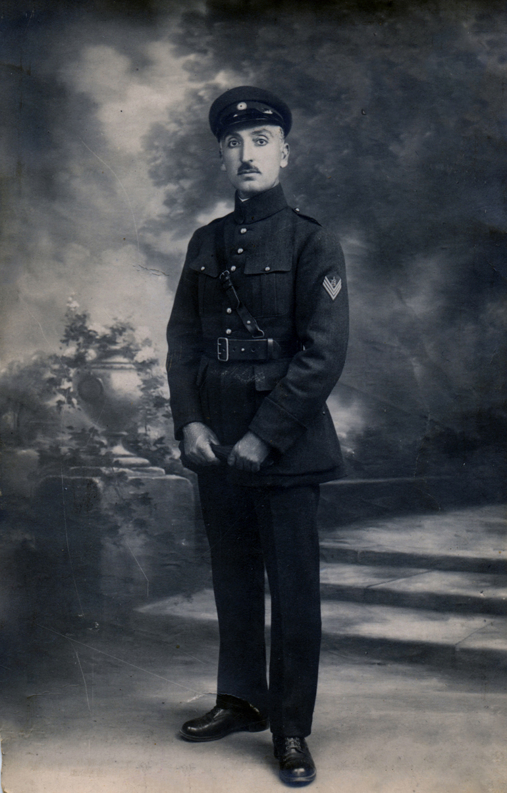
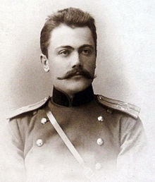
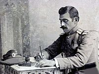

Georgian Generals

Valiko Jugeli
Georgian politician and military commander.
Skills
- Attack - 3
- Defence - 4
- Planning - 3
- Logistics - 3
}})
Giorgi Kvinitadze
Georgian military commander who rose from an officer in the Imperial Russian army to commander-in-chief of the Democratic Republic of Georgia.
Skills
- Attack - 3
- Defence - 6
- Planning - 4
- Logistics - 5

Kote Apkhazi
Georgian military officer, politician and public figure. Leader of the liberal nobility of Georgia.
Skills
- Attack - 3
- Defence - 4
- Planning - 5
- Logistics - 6

Giorgi Mazniashvili
Georgian general and one of the most prominent military figures in the Democratic Republic of Georgia.
Skills
- Attack - 6
- Defence - 4
- Planning - 5
- Logistics - 3